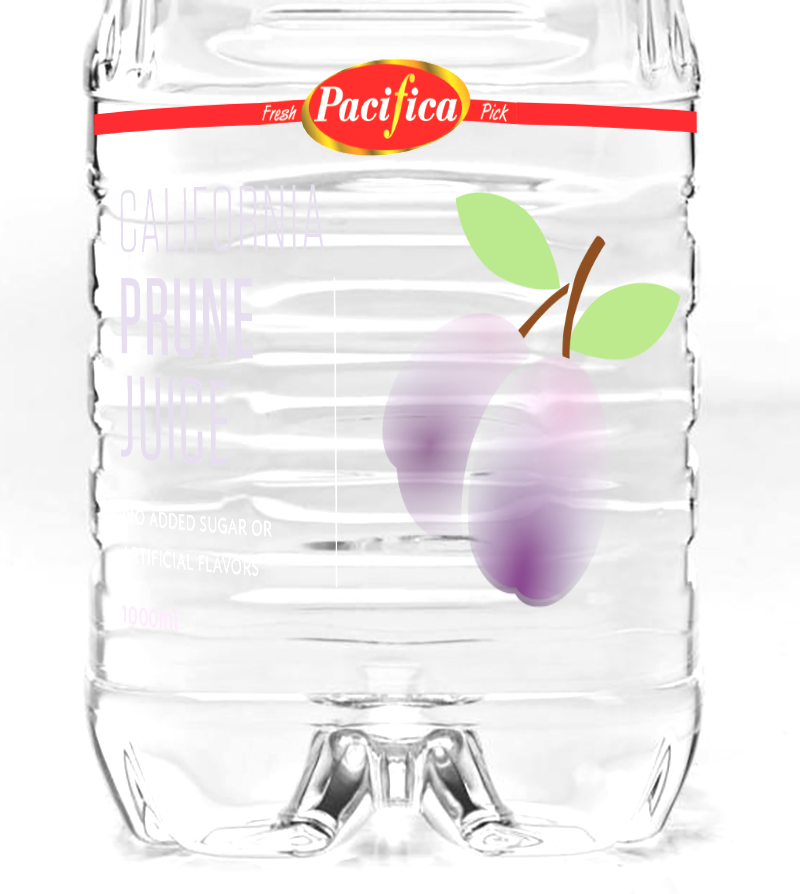
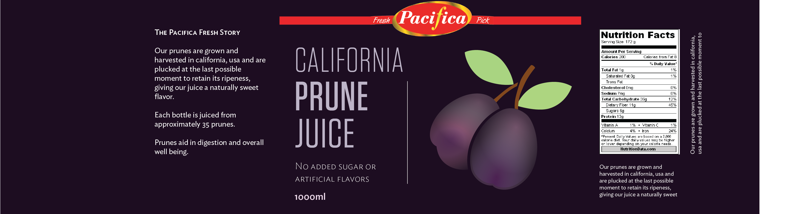

Concept 1 : I can see right through you.
Introduction
The moment a shopper steps inside a grocery, there is an onslaught of products shouting and wanting the shopper’s attention. Words like “NEW!”, “IMPROVED”, “SALE”, “PROMO” greet shoppers. It is visually stimulating at first but try to stay and stare at them for a prolonged time- you will feel the fatigue sets in. On top of this, our aural senses are constantly bombarded with theme songs that are catchy on its own but paired with yet another catchy song, played in tandem just hurt the ears and eventually shoppers will experience what we call shoppers fatigue.
Yes, that is how groceries are set up. It is structured that way so that products on shelves can be heard, seen and hopefully bought.
What used to be an effective way of getting products noticed is now only seen as noise. If everyone is screaming, how can you be heard?
Our attentions are being redirected not to the product itself, but the packaging, the marketing and price.
Concept


Our packaging/label believes otherwise. The product should speak for itself. It is true that excellently designed packaging can grab a potential customer’s attention, but I believe a great product can establish loyal clientele. If you cover up your product with scrupulous and unnecessary stuff, how can they see what you are selling?
Customers are smart, they can smell BS a mile a way. We have the internet to thank for that. Hiding in great packaging no longer is an option. There’s a new breed of shoppers burgeoning - the informed kind. Information is so easy to access nowadays, with just a swipe/tap of a finger, a shopper can essentially look up your brand, check the reviews, look up the nutritional information and immediately decides if what you are selling is good for them.
Why go through all that trouble, when they can see right through you? A transparent label lets us skip through that and place the product front and center. That is how confident Pacifica is. What it offers is not from concentrate, but from real prunes from California, USA.
Trying to use as little packaging as possible allows us to keep printing costs down, which is not only innovative, but just practical.
Typography
Tungsten is used as our display type. We chose tungsten for its very modern and contemporary feel. Although, Tungsten is a tall and condensed typeface, it is still very much readable and being condensed, we are able to fit more text per line as compared to other rounded display types.
Going for a clean, slick typeface brings the product to the new millenium, targetting the younger generation. The typeface is tall to maximize space yet still retaining readability even from far away.
Illustration
The accompanying illustration helps the customer discern that what they are getting is prune juice. The illustration is only used to aid and not to distract. Hence its size and position.
The Last Say
But, what happens then when your customer runs out of juice? Here’s what’s amazing: Since the label is transparent, it’ll be difficult for them to see “California, Prune, Juice etc.” but that’s the beauty of this label!
A transparent label takes away the unecessary and keeps only the essentials. What remains is “Pacifica – Fresh Pick”.
So now you know what juice to pick up the next time you have your grocery run.